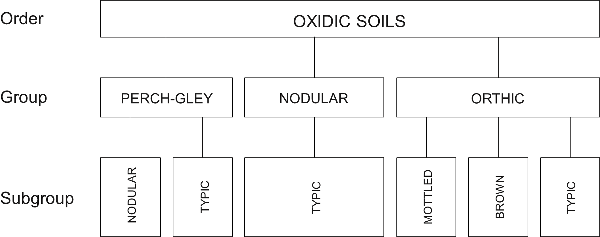

Introduction
Version 3.0 of the Zealand Soil Classification is the culmination of a period of development from its initiation in 1983 to wide circulation of versions 1.0 and 2.0 (Hewitt 1989) for comment and testing. It represents the best attempt, given the current state of knowledge, to classify New Zealand soils. As the knowledge and understanding of New Zealand soils grows, further revisions will be necessary. Accounts of the methods used in developing the soil classification and the rationale for the classes and differentia used are in preparation.
The New Zealand Soil Classification is a national soil classification intended to replace the New Zealand Genetic Soil Classification (Taylor 1948; Taylor and Cox 1957; Taylor and Pohlen 1962). The New Zealand Genetic Soil Classification grew out of the need for reconnaissance mapping of the nation’s soil resources. It was successful as a unifying factor in New Zealand soil science, and it played a vital role in the development of pastoral agriculture. However, modern soil surveys and land evaluations required precise definition of classes and keys for their recognition. Furthermore, a new synthesis was needed of the large body of information collected since the 1950s. The present work has grown out of the New Zealand Genetic Soil Classification and, where possible, preserves successful parts of that classification. It has also been influenced by experience in testing the US Soil Taxonomy (Leamy, Clayden, and Hewitt 1983).
Objectives
The objectives of the New Zealand Soil Classification are:
- to provide a better means of communication about New Zealand soils and their utilisation;
- to provide an efficient vehicle for soil identification, soil series recognition and correlation, and soil map legend establishment in soil surveys;
- to enable an efficient stratification of soil database information;
- to draw together knowledge of the properties of New Zealand soils and important similarities and differences among them.
A discussion of these objectives is given by Hewitt (1984).
Principles
To accomplish the objectives, the following principles have guided the development of this proposal. These are explained further by Hewitt (1984).
- The classification should be hierarchical, providing ascending levels of generalisation.
- The grouping of soils into classes should be based on similarity of measurable soil properties rather than presumed genesis.
- Classes must be designed to allow the greatest number and most precise accessory statements to be made about them consistent with their level in the hierarchy.
- Differentia should be based on soil properties that can be reproducibly and precisely measured or observed.
- Differentia should where possible allow field assignment of soils to classes, either directly, or by tested inferences.
- The nomenclature of higher categories should be based where possible on connotative English words chosen for their acceptability to non-specialists.
- Where possible, continuity with successful parts of the New Zealand Genetic Classification should be maintained.
- The soil classification must be valid for the main islands of New Zealand. Classes must be correlated with Soil Taxonomy (Soil Survey Staff 1999) to support international extension.
The Soil Individual
The soil individual is the fundamental unit of soil which is assigned to classes. Cline (1949) defined an individual as “the smallest natural body that can be defined as a thing complete in itself”.
Soil Taxonomy (Soil Survey Staff 1999) regards the polypedon as the soil individual. This is rejected here because, as discussed by Hewitt (1982), it does not fulfil Cline’s (1949) or Johnson’s (1963) requirements for a soil individual.
In New Zealand, the soil individual has traditionally been the soil profile. Usually conceived as a two-dimensional section exposed by a soil pit, it is in fact a three-dimensional slice sufficiently thick to sample and examine hand specimens. It should therefore be termed a “soil profile slice”. With the realisation that soils should be examined in successive horizontal sections as well as the vertical profile, there is increasing acceptance that a volume of soil the size of the pedon Soil Survey Staff (1999) represents a better soil individual than the soil profile slice.
Accordingly, the pedon as defined in Soil Taxonomy (Soil Survey Staff 1999) is recommended as the soil individual for the New Zealand Soil Classification. It is understood that assignments are often made from the examination of volumes of soil smaller than a complete pedon, where they are assumed representative of the pedon.
How to assign a soil to Subgroup level
Normally, a soil pit must be dug of sufficient size to expose the soil horizons to about 1 m depth, or to rock if shallower.
The soil horizons are examined and the assignment is then made by following the key, starting with the Key to Orders. The “Diagnostic Horizons and Other Differentiae” section is consulted as necessary to identify diagnostic horizons and other differentia. For some classes, pH or other chemical measurements must be made. These should be performed on samples taken between the specified depths, and bulked from at least four places in the pit. The characteristics of the soil are compared with the key statements of each soil order, starting with Organic Soils and passing down the key to the first soil order that fits them. When a soil order is identified, the chapter concerning that order is consulted and the keys to soil groups and soil subgroups are followed in the same manner to identify the appropriate soil group and subgroup.
The name given to a soil assigned to a subgroup is made up of three elements in the sequence: subgroup, group, and order (for example, Nodular Perch-gley Oxidic Soils). Figure 2.1 illustrates the relationships between subgroups and groups in the Oxidic Soils order.
Misclassification
The classes are the most important part of the soil classification. The key is merely a means of allocating soils to these classes, and by its nature is imperfect because only a sample of all the possible soils that might potentially be allocated were used in developing the key. Consequently, soils will be found that are not allocated to the appropriate class by the key. This will be apparent when a soil, allocated to a class, does not conform to the concept and accessory statements that can normally be made about that class. Because the key is the servant of the classes, the allocator is justified in placing the soil misfit into a more appropriate class. If this is done, however, it must be registered with the person with responsibility for the national soil classification system, so that appropriate adjustments may be made to the key when the soil classification is next revised. An allocation contrary to the key must also be noted in any records or publication of the allocation.
Justification of new Subgroups
Justification for new subgroups may be made in two ways. First, if a soil is judged to be misclassified, and a more appropriate class is not available, then a new subgroup may be justifiable. Second, an existing subgroup may encompass a set of soils with properties that are too wide in range. The old subgroup could be split into two new ones. Splitting may be justified if it will significantly increase the number and precision of accessory statements that can be made about both of the new classes.
Correlations with other soil classification systems
Classes of the New Zealand Soil Classification do not correspond precisely with classes of other soil classification systems. Despite this, correlations can be made where classes are substantially equivalent. In Table 2.1, classes of the Zealand Soil Classification are correlated with the New Zealand Genetic Soil Classification (Taylor and Pohlen 1962) and Soil Taxonomy (Soil Survey Staff 1999).
#> Warning: package 'flextable' was built under R version 4.3.2NZ Soil Classification (v. 3) | NZ Genetic Soil Classification | US Soil Taxonomy |
|---|---|---|
ALLOPHANIC SOILS | ||
Perch-Gley Allophanic Soils | gley soils | Aquands |
Gley Allophanic Soils | gley soils | Aquands |
Impeded Allophanic Soils | YB loams | Cryands and Udands |
Orthic Allophanic Soils | YB loams | Cryands and Udands |
ANTHROPIC SOILS | ||
Truncated Anthropic Soils | anthropic soils | Arents |
Refuse Anthropic Soils | anthropic soils | Arents or Unclassified |
Mixed Anthropic Soils | anthropic soils | Arents |
Fill Anthropic Soils | anthropic soils | Arents |
BROWN SOILS | ||
Allophanic Brown Soils | YB earths (upland & high country) | Dystrochrepts |
Sandy Brown Soils | YB sands | Ustochrepts, Dystrochrepts and Psamments |
Oxidic Brown Soils | YB earths (northern | Dsytrochrepts |
Mafic Brown Soils | BG loams and clays | Dsytrochrepts |
Acid Brown Soils | podzolized YB earthsor YB earths | Dsytrochrepts |
Firm Brown Soils | YB earths, YB shallow and stony soils | Dystrochrepts and Ustochrepts |
Orthic Brown Soils | YB earths, YB shallow and stony soils | Dystrochrepts and Ustochrepts |
GLEY SOILS | ||
Sulpuric Gley Soils | gley soils | Sulphaquepts |
Sandy Gley Soils | gley soils | Aquepts or Aquents |
Acid Gley Soils | gley soils | Aquepts |
Oxidic Gley Soils | gley soils | Aquox |
Recent Gley Soils | gleyed recent soils | Aquents |
Orthic Gley Soils | gleyed recent soils | Aquepts or Aquents |
GRANULAR SOILS | ||
Perch-gley Granular Soils | BG loams or BG clays | Aquults |
Melanic Granular Soils | BG loams or BG clays | Humults and Udalfs |
Oxidic Granular Soils | BG loams or BG clays | Humults |
Orthic Granular Soils | BG loams or BG clays | Humults |
MELANIC SOILS | ||
Vertic Melanic Soils | BG loams and clays | Ustolls or Vertisols |
Perch-gley Melanic Soils | gley soils | Aquolls |
Rendzic Melanic Soils | rendzinas | Rendolls |
Mafic Melanic Soils | BG loams and clays | Ustochrepts, Eutrochrepts, Ustolls or Udolls |
Orthic Melanic Soils | rendzinas and rendzinic intergrades | Ustolls, Udolls or Eutrochrepts |
ORGANIC SOILS | ||
Litter Organic Soils | unclassified | Folists or unrecognised |
Fibric Organic Soils | organic soils | Fibrists |
Mesic Organic Soils | organic soils | Hemists |
Humic Organic Soils | organic soils | Saprists |
OXIDIC SOILS | ||
Perch-gley Oxidic Soils | gley soils | Aquox |
Nodular Oxidic Soils | strongly weathered red loams, brown loams, or BG loams or BG clays | Udox |
Orthic Oxidic Soils | Udox | |
PALLIC SOILS | ||
Perch-gley Pallic Soils | yellow-grey earths | Aquepts, Aqualfs |
Duric Pallic Soils | yellow-grey earths | Duraqualfs |
Fragic Pallic Soils | yellow-grey earths | Fragiudalfs, Fragiochrepts |
Laminar Pallic Soils | yellow-grey earths | Haplustalfs, Hapludalfs |
Argillic Pallic Soils | yellow-grey earths | Haplustalfs, Hapludalfs |
Immature Pallic Soils | yellow-grey earths or recent soils | Eutrochrepts, Ustochrepts |
PODZOLS | ||
Densipan Podzols | podzols | Aquods, Orthods |
Perch-gley Podzols | gley podzols | Aquods |
Groundwater-gley Podzols | gley podzols | Aquods |
Pan Podzols | podzols | Orthods |
Orthic Podzols | podzols | Orthods |
PUMICE SOILS | ||
Perch-gley Pumice Soils | gley soils | Vitraquands |
Impeded Pumice Soils | YB pumice soils | Vitrands, Vitricryands |
Orthic Pumice Soils | YB pumice soils | Vitrands, Vitricryands |
RAW SOILS | ||
Gley Raw Soils | unclassified | Entisols, or not-soil |
Hydrothermal Raw Soils | hydrothermal soils | Entisols, or not-soil |
Rocky Raw Soils | unclassified | Entisols, or not-soil |
Sandy Raw Soils | unclassified | Entisols, or not-soil |
Fluvial Raw Soils | unclassified | Entisols, or not-soil |
Tephric Raw Soils | unclassified | Entisols, or not-soil |
Orthic Raw Soils | unclassified | Entisols, or not-soil |
RECENT SOILS | ||
Hydrothermal Recent Soils | recent soils | Aquents, Orthents |
Rocky Recent Soils | lithosols | Orthents |
Sandy Recent Soils | recent soils | Psamments |
Fluvial Recent Soils | recent soils | Fluvents, Ochrepts |
Tephric Recent Soils | recent soils | Orthents, Cryands, Udands |
Orthic Recent Soils | recent soils | Orthents, Ochrepts |
SEMIARID SOILS | ||
Aged-argillic Semiarid Soils | brown-grey earths | Haplargids |
Solonetzic Semiarid Soils | solonetz | Natragids |
Argillic Semiarid Soils | brown-grey earths | Haplargids, |
Immature Semiarid Soils | brown-grey earths | Camborthids |
ULTIC SOILS | ||
Densipan Ultic Soils | YB earths or podzols | Aquults |
Albic Ultic Soils | YB earths | Aquults, Humults or Udults |
Perch-gley Ultic Soils | YB earths | Aquults |
Sandy Ultic Soils | YB earths or YB sands | Hapludults |
Yellow Ultic Soils | YB earths | Hapludults |